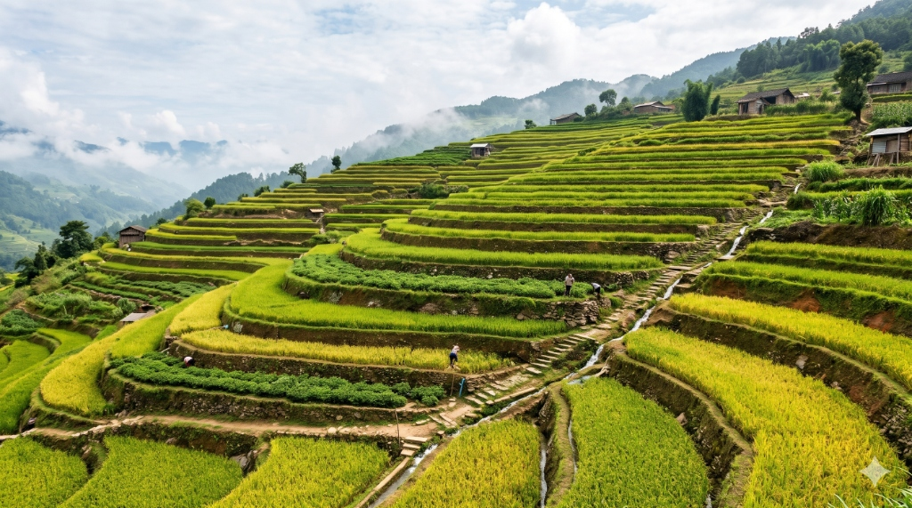

విత్తనం నుండి సమృద్ధి పంట వరకు
From Soil & Sapling to Bountiful Harvest
Autonomous agronomic diagnostic assistant & botanical vision expert. Scroll down to watch the terrace field rise from germinating seeds into a waving harvest, then download the complete offline engine to your device.
Download the complete agricultural intelligence package directly to your computer or mobile device. All matrix rules, botanical phytopathology models, transpiration timers, and village resilience forums run entirely inside your native browser cache without requiring internet connectivity.
Save the single self-contained HTML application. Double-click to run on Android, macOS, Windows, or Linux anywhere with zero connectivity.
Open the offline companion suite right here in an immersive popup window with full access to soil profiles, transpiration timers, and village tools.
Trained botanical vision triage and spoken diagnosis in natural everyday Telugu (సరళమైన వాడుక తెలుగు) & English following IPM guidelines.
Tap the browser menu (three dots ⋮ in Chrome/Brave) and select "Add to Home screen" or "Install app". Sehawa will launch as a native standalone app without URL bars.
Download the sehawa-offline-engine.html file. You can double-click it directly to run from any folder, USB flash drive, or desktop without internet access.
All camera leaf diagnostics, irrigation timers, and community posts operate 100% locally. No SIM card or mobile data signal is required in your fields.